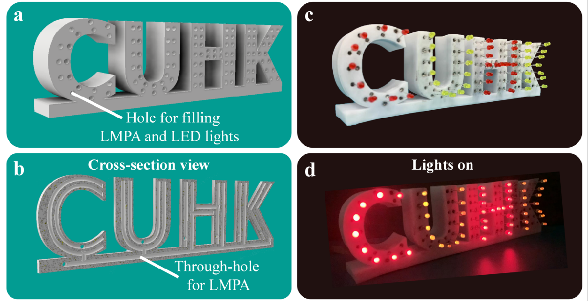

Low-melting-point Alloys Integrated Extrusion Additive Manufacturing
Additive Manufacturing, 2023
Jingchao Jiang+, Xiaoya Zhai+, Kang Zhang+, Liuchao Jin, Qitao Lu, Zhichao Shen, Wei-Hsin Liao*.
+ These authors contributed equally to this work.
A reviewer comment "This work proposes an innovative method to directly fabricate 3D printed very complex structures using LMPAs. It could potentially bring several advantages in many fields!"

|
Abstract
In contrast to established fabricated materials, low-melting-point alloys (LMPAs) are increasingly attractive because they have favorable electrical/thermal conductivities and mechanical strengths. However, LMPA additive manufacturing is still in its infancy. We report a novel strategy for fabricating the complex and/or multifunctional components of LMPAs by extrusion additive manufacturing with two nozzles (for extruding the polymer and for extruding the LMPA). The proposed strategy was used to successfully fabricate complex LMPA components for the first time. We fabricated LMPA/polymer composite parts with improved mechanical properties, and implemented the integrated manufacturing of circuits and 3D products. The strategy will enable the use of LMPAs in applications such as smart structures, electromagnetic shielding, biomedicine, thermal management, energy harvesting, and advanced electronics.
Fabrication process
|
The main idea is to use two nozzles during EAM: one for extruding the polymers (e.g., polylactic acid (PLA)) and another for injecting the LMPA. Figure below shows how the proposed system works. As shown step-by-step from left to right in this figure, when printing the polymer part of the component, nozzle 1 is open for fabrication. When the polymer part is completed, nozzle 2 opens to inject the molten LMPA. Once the whole component cools to below the melting temperature of LMPA, the molten LMPA solidifies, and the entire component is finished. The strategy proposed in the present paper has three novel aspects. |

Results
Complex structures fabrication based on LMPATo the best of our knowledge, our study is the first to demonstrate the fabrication of complex lattice, tooth, and bone LMPA structures using EAM, which is a low-cost AM technique. The ability to fabricate complex parts will facilitate the design of LMPA structures that can be applied with improved efficiency to more fields. 
|
3D printing of composite partsThe fabricated parts of LMPA/polymer composites have better mechanical properties than traditional pure polymer 3D printed parts. The standard parts were designed for tensile and three-point bending tests. 
|
3D printed products with internal electrical wires produced without an assembly stepTo demonstrate the fabrication of 3D products featuring LMPAs that act as internal electrical wires, we designed a test piece comprising the letters CUHK;

|
Download

|

|
|
|
|
| Paper | Video_1 | Video_2 | Video_3 | Video_4 |
Extensions
Welcome to cite this work!
If there is any problem whiling using, please send a message to [ xiaoyazhai@ustc.edu.cn ]